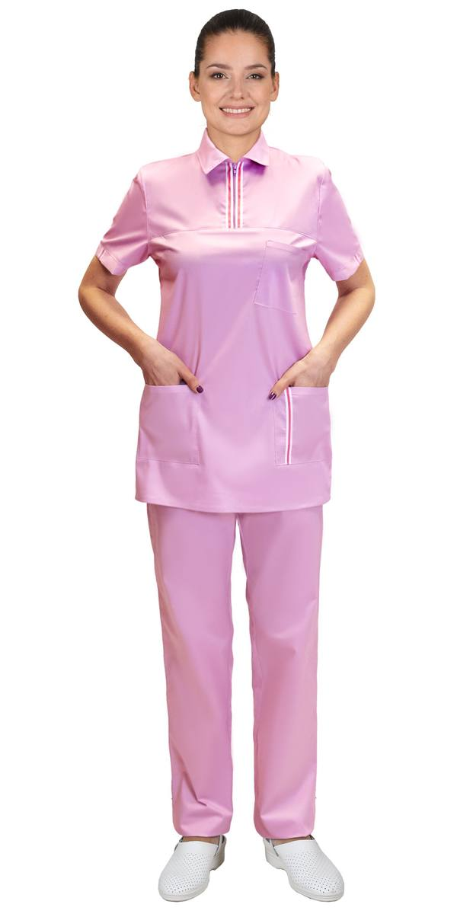
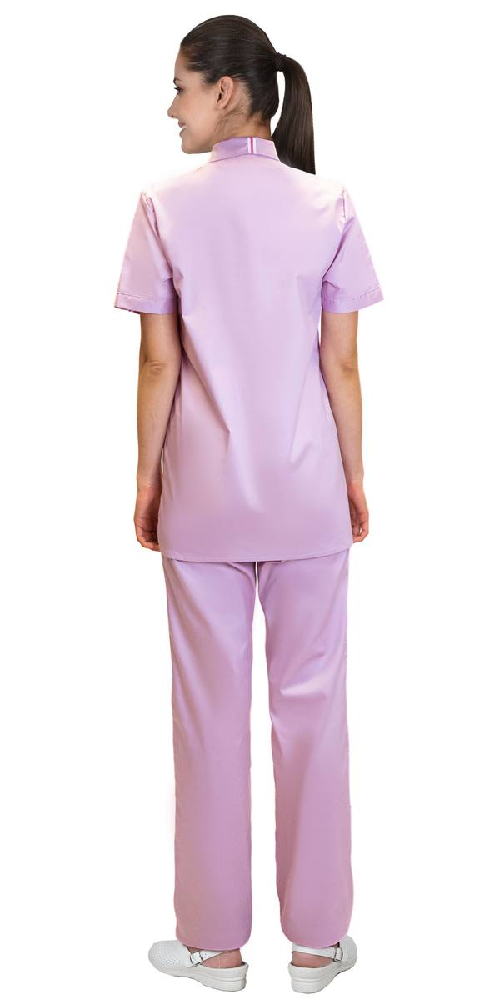
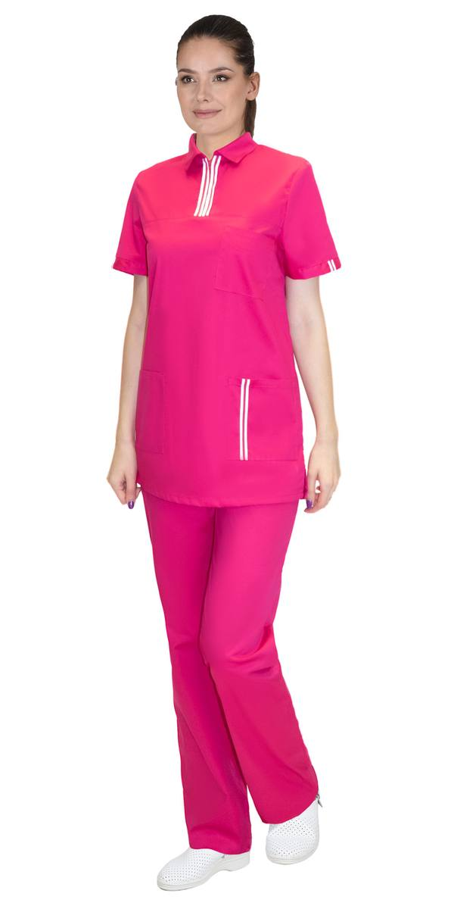
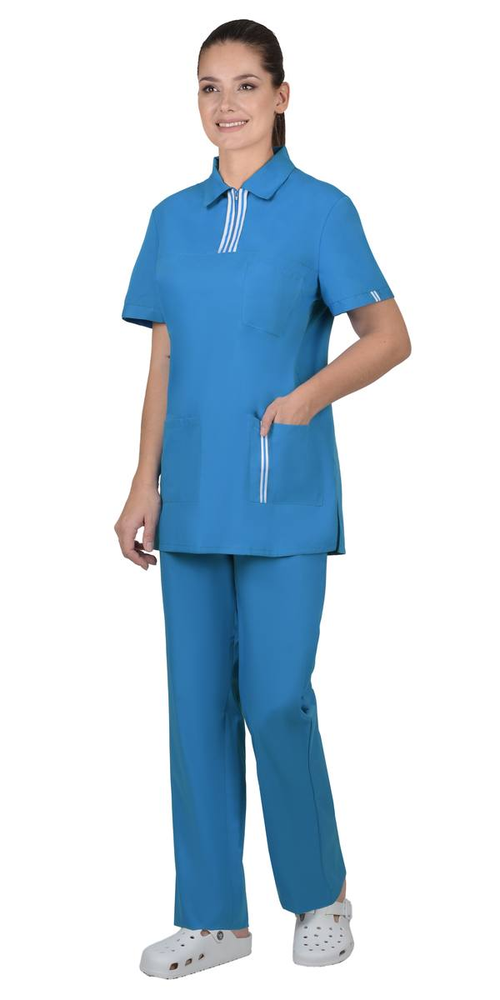
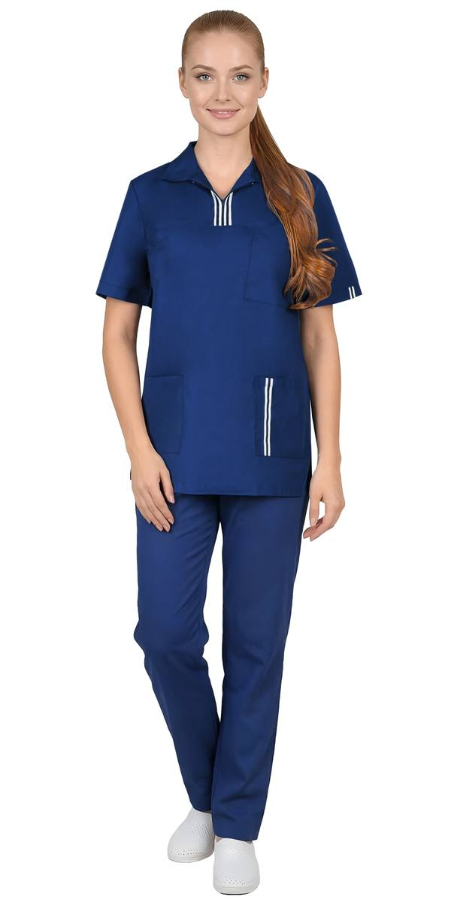
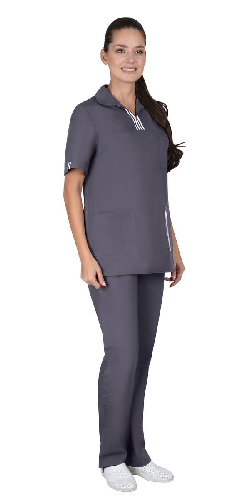
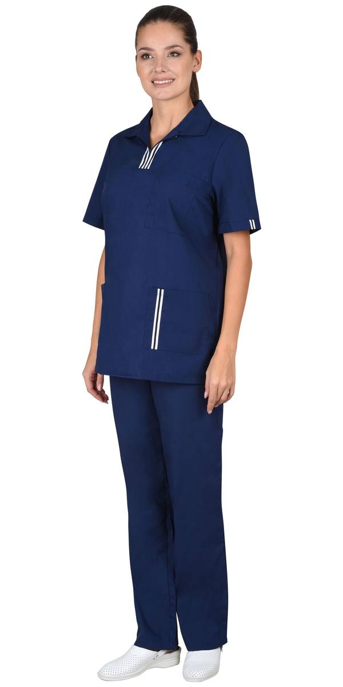

Костюм женский фуксия тк. Твил-Стрейч (сработка сырья)(ЧЗ)
Костюм женский: блуза, брюки, голубой (ЧЗ)
Костюм женский: блуза, брюки, синий тк.ТиСи-Стрейч (сработка сырья) (ЧЗ)
Костюм женский: куртка, брюки, т.-серый тк. "ТиСи" (ЧЗ)
Костюм женский: куртка, брюки, тёмно-синий (ЧЗ)| Артикул | Вариант / цвет |
|---|---|
| 151715 | Костюм женский розовый тк. Твил-Стрейч (сработка сырья)(ЧЗ) |
| 151750 | Костюм женский т.-серый тк. Твил-Стрейч (сработка сырья)(ЧЗ) (распродажа) |
| 151763 | Костюм женский фуксия тк. Твил-Стрейч (сработка сырья)(ЧЗ) |
| 135982 | Костюм женский: блуза, брюки, бордовый (ЧЗ) |
| 135969 | Костюм женский: блуза, брюки, голубой (ЧЗ) |
| 165648 | Костюм женский: блуза, брюки, синий тк.ТиСи-Стрейч (сработка сырья) (ЧЗ) |
| 160899 | Костюм женский: куртка, брюки, т.-серый тк. "ТиСи" (ЧЗ) |
| 111212 | Костюм женский: куртка, брюки, тёмно-синий (ЧЗ) |